Part 3: Data Transformation and Plotting
So far we have covered:
- data types in R
- reading in data
- subsetting data
- reading documentation
- using functions
- saving data
Of course, we haven’t used one of R’s most powerful assets: graphics. This section is dedicated to creating a plot from the data. While R has very powerful default plotting functions, we will be using the “ggplot2” package for three reasons:
- It relies on a consistent “grammar of graphics” that gives a clear relationship between the data and the visualization
- It requires consistently “tidy” data, with one row per observaion
- It’s quite popular with the kids nowadays
We will additionally include a supplementary file for creating plots in the default plotting system for those who are curious.
Expected Outcomes
After this section, you should have the tools to:
- create a simple plot in ggplot2
- reshape data (aka pivot and unpivot)
- save plots
Again, since this is a three hour workshop, we do not expect mastery, but this at least should give you a starting point. With that in mind, let’s get started!
Packages
For the tasks in this example, we will load the “tidyverse” package. This will load six packages (see https://tidyverse.tidyverse.org):
- ggplot2, for data visualisation.
- dplyr, for data manipulation.
- tidyr, for data tidying.
- readr, for data import.
- purrr, for functional programming.
- tibble, for tibbles, a modern re-imagining of data frames.
We will be using the ggplot2 and tidyr packages
> library("tidyverse")Loading tidyverse: ggplot2
Loading tidyverse: tibble
Loading tidyverse: tidyr
Loading tidyverse: readr
Loading tidyverse: purrr
Loading tidyverse: dplyrConflicts with tidy packages ----------------------------------------------filter(): dplyr, stats
lag(): dplyr, statsData
We will be using the same data as before, but we will introduce a new function for reading in data from the readr package called read_csv(). This avoids conversion of characters (strings) to factors, provides better error messages, and is generally more efficient.
> fungicide <- read_csv("data/FungicideExample.csv")Parsed with column specification:
cols(
Julian.Date = col_integer(),
TwentyOneThirtySevenWheat = col_double(),
TwentyOneThirtySevenWheat.trt = col_double(),
CutterWheat = col_double(),
CutterWheat.Trt = col_double(),
JaggerWheat = col_double(),
JaggerWheat.Trt = col_double()
)> fungicide# A tibble: 9 x 7
Julian.Date TwentyOneThirtySevenWheat TwentyOneThirtySevenWheat.trt
<int> <dbl> <dbl>
1 97 0.00 0.00
2 104 0.00 0.00
3 111 0.00 0.00
4 118 0.00 0.00
5 125 0.00 0.00
6 132 0.00 0.00
7 139 2.34 1.81
8 146 7.56 7.89
9 154 28.78 15.04
# ... with 4 more variables: CutterWheat <dbl>, CutterWheat.Trt <dbl>,
# JaggerWheat <dbl>, JaggerWheat.Trt <dbl>Note that this looks slightly different than the data frame we saw earlier. Never fear, this is still a data frame. We can confirm this with is.data.frame():
> is.data.frame(fungicide)[1] TRUEIt’s also a “tibble”, which is a form of data frame that gives more information about your data (e.g. what kind of data the columns are).
Reshaping Data
At some point in time, you will need to reshape/rearrange data in R. This is a fact of life. Doing this in R is advantageous for three reasons:
- your original data is in tact
- you have a trail of self-documenting changes
- your future self will tank you
In order to use our data with ggplot2, we need to make sure it is in a “tidy” form where we have one observation per row. We currently have six observations per row. Thus, we will need to reshape this data from this:
Julian.Date TwentyOneThirtySevenWheat TwentyOneThirtySevenWheat.trt CutterWheat CutterWheat.Trt JaggerWheat JaggerWheat.Trt
1 139 2.34 1.81 1.15 1.79 1.85 2.27
2 146 7.56 7.89 3.62 2.40 6.92 5.00
3 154 28.78 15.04 17.89 6.21 47.39 20.17to this:
Experiment Julian.Date Cultivar Severity
1 control 139 TwentyOneThirtySevenWheat 2.34
2 control 146 TwentyOneThirtySevenWheat 7.56
3 control 154 TwentyOneThirtySevenWheat 28.78
4 control 139 CutterWheat 1.15
5 control 146 CutterWheat 3.62
6 control 154 CutterWheat 17.89
7 control 139 JaggerWheat 1.85
8 control 146 JaggerWheat 6.92
9 control 154 JaggerWheat 47.39
10 treatment 139 TwentyOneThirtySevenWheat 1.81
11 treatment 146 TwentyOneThirtySevenWheat 7.89
12 treatment 154 TwentyOneThirtySevenWheat 15.04
13 treatment 139 CutterWheat 1.79
14 treatment 146 CutterWheat 2.40
15 treatment 154 CutterWheat 6.21
16 treatment 139 JaggerWheat 2.27
17 treatment 146 JaggerWheat 5.00
18 treatment 154 JaggerWheat 20.17> stop("
+ Discussion: What are the differences between the two data frames above?
+ How can we get from one data frame to the other?
+ ")Error in eval(expr, envir, enclos):
Discussion: What are the differences between the two data frames above?
How can we get from one data frame to the other?
There are several ways of creating the tidy data frame; we will show one here, but there are others that we will discuss during the workshop.
The process we will demonstrate takes three steps:
- subset control and treatment data into separate data frames
- collect each record into a single row with the tidyr function
gather()(This is also known as “unpivot” in Excel: http://www.excel-university.com/unpivot-excel-data/). - combine the two data frames and create a new column called “Experiment” with the dplyr function
bind_rows()
Step 1: Subset data
Subset control and treatmend data into separate data frames. Since we have a data frame, we will use matrix-like subsetting.
> control <- fungicide[, c(1, 2, 4, 6)]
> treatment <- fungicide[, c(1, 3, 5, 7)]Now we have two separate data frames with 4 columns each, but still we have three observations per row.
> stop("
+ Would this approach work for a different data set? Why or why not?
+ ")Error in eval(expr, envir, enclos):
Would this approach work for a different data set? Why or why not?
Step 2: Tidy data
Now that we have our experiments in separate tables, we can reshape each table into tidy format by using tidyr’s gather(). This will “gather” all of the data that are spread across columns into single rows. Users of excel might be familiar with this operation as “unpivot”.
In order to do this, we will need to specify three things:
- A new column name to specify where the data came from (key)
- A new column name to specify what the data represents (value)
- The columns to include (or exclude)
I often find the key/value syntax confusing and have to look at the examples in the help page for gather().
> stop("
+ Look at the examples for gather and determine what the names of the
+ key and value columns should be for our data.
+ (hint: you can use example(gather) to run them automatically).
+ ")Error in eval(expr, envir, enclos):
Look at the examples for gather and determine what the names of the
key and value columns should be for our data.
(hint: you can use example(gather) to run them automatically).
Now that we have our keys and values, we can plug them into gather().
Note, however, this uses “bare” names (names that are not between quotation marks) to specify columns. This is a feature of the tidyverse to make typing easier, but does not necessarily work outside of the tidyverse.
To avoid typing all of the columns we want to collapse, we’ll simply specify the column that we don’t want to collapse, which is Julian.Date. This is done by placing a minus (-) symbol in front of it.
> con.tidy <- gather(data = control, key = Cultivar, value = Severity, -Julian.Date)
> con.tidy# A tibble: 27 x 3
Julian.Date Cultivar Severity
<int> <chr> <dbl>
1 97 TwentyOneThirtySevenWheat 0.00
2 104 TwentyOneThirtySevenWheat 0.00
3 111 TwentyOneThirtySevenWheat 0.00
4 118 TwentyOneThirtySevenWheat 0.00
5 125 TwentyOneThirtySevenWheat 0.00
6 132 TwentyOneThirtySevenWheat 0.00
7 139 TwentyOneThirtySevenWheat 2.34
8 146 TwentyOneThirtySevenWheat 7.56
9 154 TwentyOneThirtySevenWheat 28.78
10 97 CutterWheat 0.00
# ... with 17 more rowsNote that we can easily get back our original data by using the spread() function, which is the opposite of gather():
> spread(data = con.tidy, key = Cultivar, value = Severity)# A tibble: 9 x 4
Julian.Date CutterWheat JaggerWheat TwentyOneThirtySevenWheat
* <int> <dbl> <dbl> <dbl>
1 97 0.00 0.00 0.00
2 104 0.00 0.00 0.00
3 111 0.00 0.00 0.00
4 118 0.00 0.00 0.00
5 125 0.00 0.00 0.00
6 132 0.00 0.00 0.00
7 139 1.15 1.85 2.34
8 146 3.62 6.92 7.56
9 154 17.89 47.39 28.78This was simply to demonstrate that with tidy data, it’s possible to reshape it in most any way possible.
Now we can tidy our treatment data. But first, because we want to combine this data with our control, we want to make sure that the values in the “Cultivar” column are the same. Currently we have the following columns in our treatment data.
> colnames(treatment)[1] "Julian.Date" "TwentyOneThirtySevenWheat.trt"
[3] "CutterWheat.Trt" "JaggerWheat.Trt" If we take a look at these column names, we can see that they all end in .Trt, except for the second column, which ends in .trt. Because R is case-sensitive, it will see .trt and .Trt as two different things. To avoid this problem, we will simply replace the column names of the treatment to those of the control.
> colnames(control)[1] "Julian.Date" "TwentyOneThirtySevenWheat"
[3] "CutterWheat" "JaggerWheat" > colnames(treatment) <- colnames(control)
> treatment# A tibble: 9 x 4
Julian.Date TwentyOneThirtySevenWheat CutterWheat JaggerWheat
<int> <dbl> <dbl> <dbl>
1 97 0.00 0.00 0.00
2 104 0.00 0.00 0.00
3 111 0.00 0.00 0.00
4 118 0.00 0.00 0.00
5 125 0.00 0.00 0.00
6 132 0.00 0.00 0.00
7 139 1.81 1.79 2.27
8 146 7.89 2.40 5.00
9 154 15.04 6.21 20.17Now we can tidy our treatment data.
> trt.tidy <- gather(data = treatment, key = Cultivar, value = Severity, -Julian.Date)Step 3: combining experiments
We can combine the treatments by using the dplyr function bind_rows(), which takes any number of data frames and places them on top of one another. It takes an optional argument, .id (note the “.”) that specifies a separate column to create identifying the source data frame.
> fungicide.tidy <- bind_rows(control = con.tidy, fungicide = trt.tidy, .id = "Experiment")
> fungicide.tidy# A tibble: 54 x 4
Experiment Julian.Date Cultivar Severity
<chr> <int> <chr> <dbl>
1 control 97 TwentyOneThirtySevenWheat 0.00
2 control 104 TwentyOneThirtySevenWheat 0.00
3 control 111 TwentyOneThirtySevenWheat 0.00
4 control 118 TwentyOneThirtySevenWheat 0.00
5 control 125 TwentyOneThirtySevenWheat 0.00
6 control 132 TwentyOneThirtySevenWheat 0.00
7 control 139 TwentyOneThirtySevenWheat 2.34
8 control 146 TwentyOneThirtySevenWheat 7.56
9 control 154 TwentyOneThirtySevenWheat 28.78
10 control 97 CutterWheat 0.00
# ... with 44 more rowsWe’ve gone to the work to tidy up the data; let’s save it to our disk so that we can easily reuse it later.
> write_csv(fungicide.tidy, path = "data/FungicideTidy.csv")We have our data in a tidy format so we can now use this to create a visualization using ggplot2.
Visualizing Data
> stop("
+ What visualization might be appropriate for these data?
+ What should be on the axes?
+ Should we use lines, points, bars, boxplots, etc?
+ ")Error in eval(expr, envir, enclos):
What visualization might be appropriate for these data?
What should be on the axes?
Should we use lines, points, bars, boxplots, etc?
If you haven’t taken the time to address the questions above, do so now.
What is ggplot2
The package ggplot2 is built off of the “grammar of graphics” in which visualizations are build layer by layer, starting with the coordinate plane and then adding geometric elements like lines, dots, bars, etc, and assigning metadata to values like color or shape.
The advantage of ggplot2 over R’s native plotting is that the plots are saved as R objects and can be modified by adding layers or even replacing data. This tutorial will begin to scratch the surface of how to use ggplot2, but to get a better idea of what is possible, you can browse the resources at http://ggplot2.tidyverse.org/#learning-ggplot2 or examine the code of colleagues (e.g. Alejandro Rojas: https://github.com/alejorojas2/Rojas_Survey_Phytopath_2016).
It is important to note that, like everything else in the tidyverse, ggplot2 uses “bare” column names, meaning that you do not need to put quotation marks when specifying a column.
Creating our plot
Note: if you are reading this script after attending the workshop, the plot may look different due to the interactive nature of the workshop. This is indtended as an example.
Before we begin, we should become familiar with two functions:
ggplot()this function creates a ggplot object from a data set.aes()this function is a general way to specify what parts of the ggplot should be mapped to variables in your data.
Creating the base of the ggplot
To create our ggplot with nothing on it, we should specify two things:
- The data set (fungicide.tidy)
- The mapping of the x and y coordinates (from the data set, using aes)
> fungicide.plot <- ggplot(data = fungicide.tidy, mapping = aes(x = Julian.Date, y = Severity))If everything worked, you should see nothing. This is because ggplot2 returns an R object. This object contains the instructions for creating the visualization. When you print this object, the plot is created:
> fungicide.plot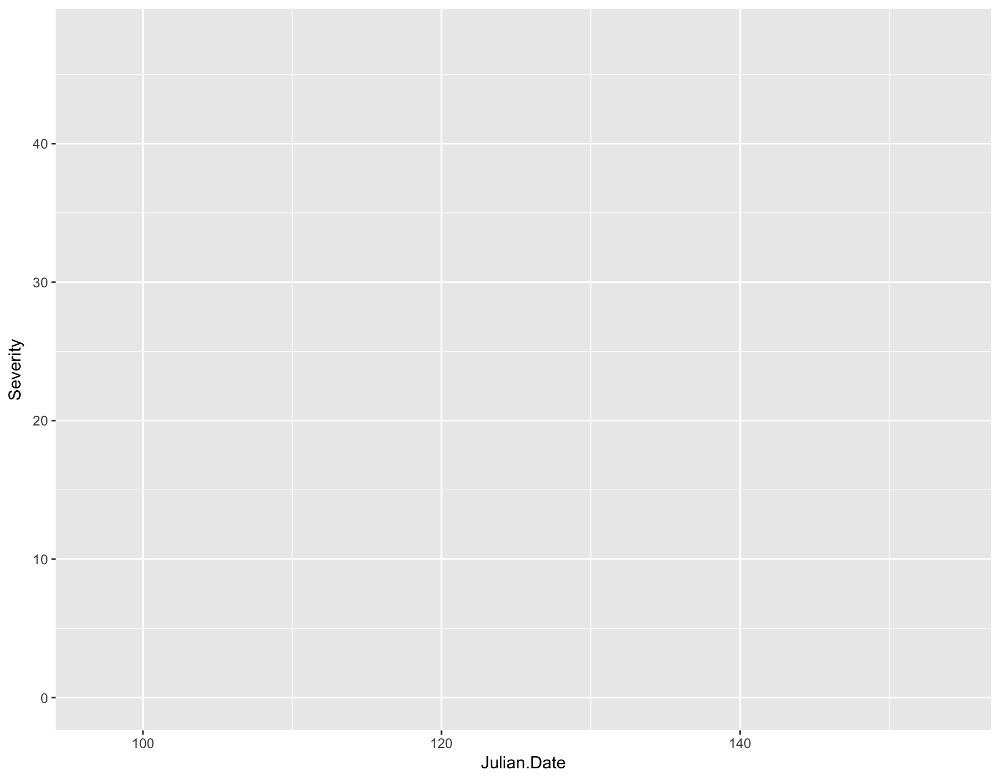
Now you should see a plot with nothing on it where the x and y axes are labeled “Julian.Date” and “Severity”, respectively.
To break down what the above function did, it first took in the data set fungicide.tidy and then mapped the x and y aesthetics to the Julian.Date and Severity columns. Effectively, this told ggplot how big our canvas needs to be in order to display our data, but currently, it doesn’t know HOW we want to display our data; we need to give it a specific geometry.
Adding a geometry layer
All functions that add geometries to data start with geom_, so if we wanted the data to be displayed as a line showing the increase of severity over time, we would use geom_line(). If we wanted to show the data displayed as points, we can use geom_point(). We can also specify the color and shape of these geometries using aes().
To add a geometry or anything to a ggplot object, we can just use the + symbol. Here, we will add lines to the plot coloring them by Cultivar and differing the line type by Experiment
Note: From here on out, I will be wrapping all commands with parentheses. This allows the result of the assignment to be displayed automatically.
> (fungicide.plot <- fungicide.plot + geom_line(mapping = aes(color = Cultivar, lty = Experiment)))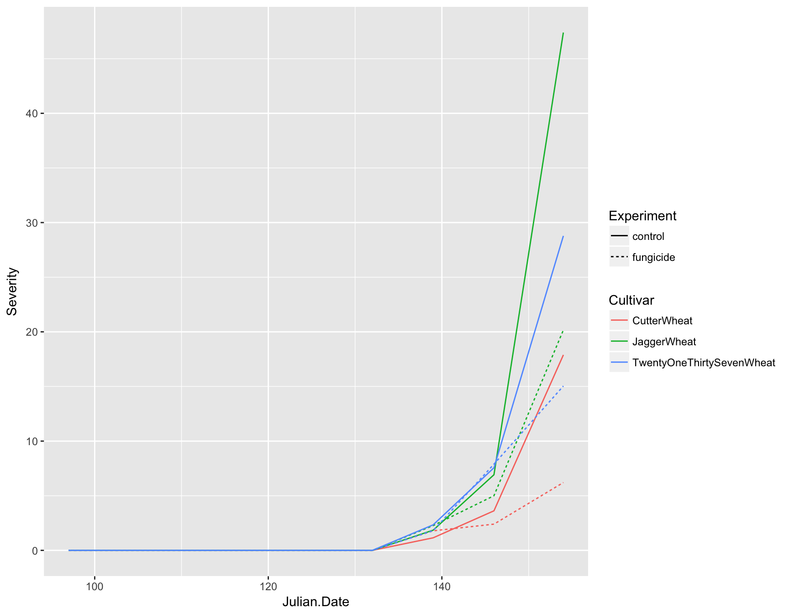
Now you can see that we not only have lines on our plot displaying the data, but we also have automatic legends. To highlight the time intervals, we can also add points to the plot by using geom_point(). Note that we don’t need to add any aesthetics to these since they are simply reenforcing the lines.
> (fungicide.plot <- fungicide.plot + geom_point())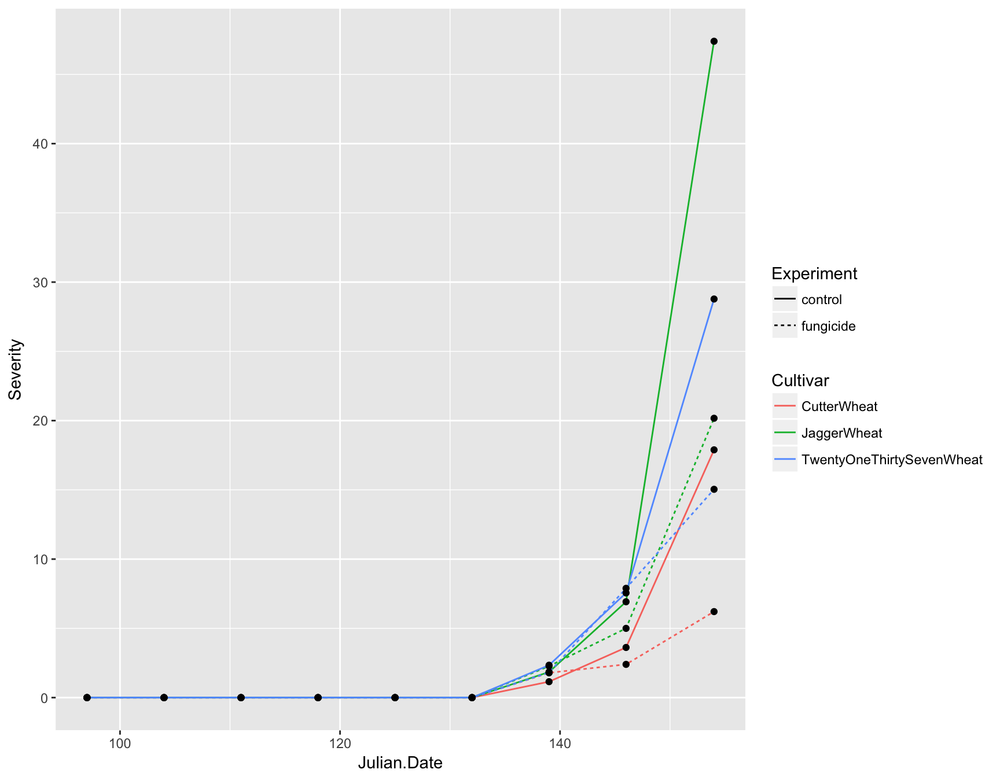
We now have a fully functional and informative plot using only three lines of code! Producing a visualization of your data can be an extremely useful tool for analysis because it can allow you to see if there are any strange patterns or spurious correlations in your variables.
Question
Now we can address the questions from Sparks et al. (2008):
- How does the size of the fungicide effect compare to the effect of resistance? Would it be the same as resistance?
- Since the fungicide typically is only active for two weeks after application, after looking at your graph, when do you think the fungicide was applied?
Of course, this plot is not quite publication ready. For one thing, it’s a bit too crowded and would cost a small fortune to include a color figure in a journal. We need to add some customization.
Preparing a publication-ready plot
In contrast to the above section, where layers are added to the plot, we are now manipulating the aesthetics of the plot in how the data and labels are displayed.
First let’s deal with the fact that this plot is over-crowded. We can separate our data into different “facets” based on a given variable. For example, we can create three plots separated by cultivar by using the facet_wrap() function and giving a formula (which contains a ~):
> (fungicide.plot <- fungicide.plot + facet_wrap(~Cultivar))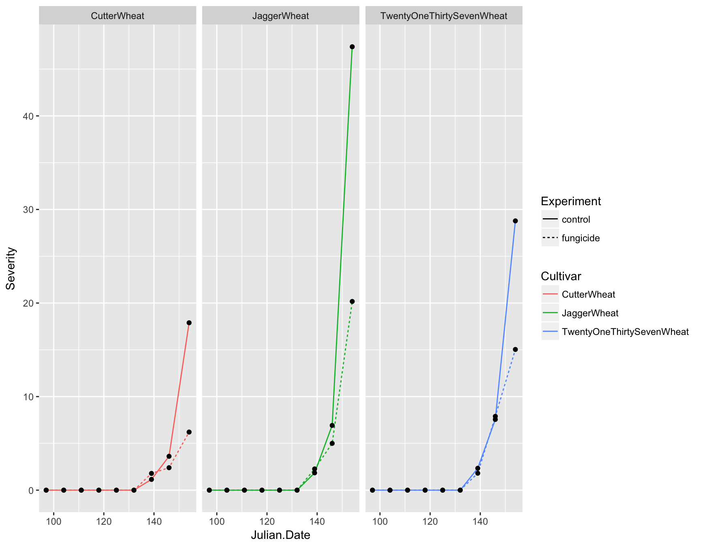
This is much clearer, but instead of having three panels side by side, we want them in a column. We can specify the number of columns by using ncol. Again, because we are manipulating how the plot is displayed and not adding layers, we can simply re-call this function
> (fungicide.plot <- fungicide.plot + facet_wrap(~Cultivar, ncol = 1))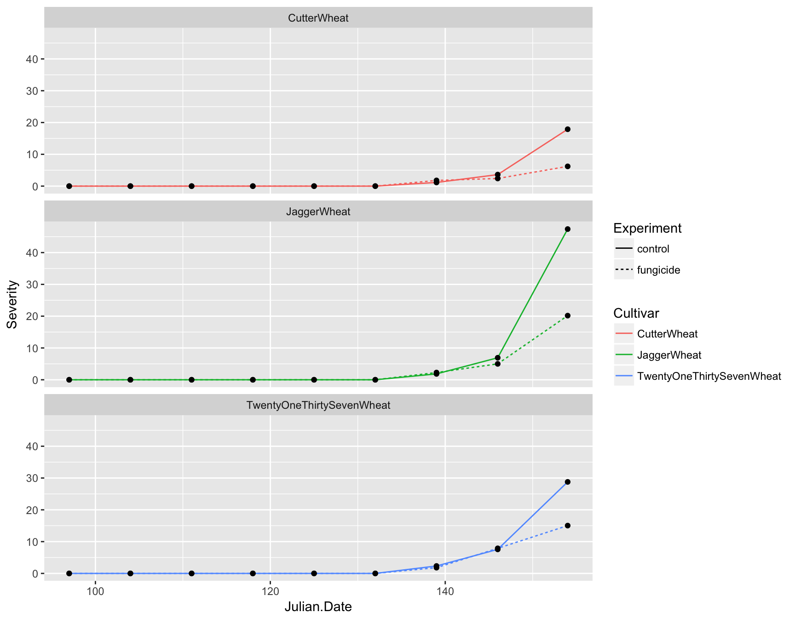
Axis labels
We also need to update the axis labels. This is easily done with xlab() and ylab():
> (fungicide.plot <- fungicide.plot + xlab("Calendar Date (Julian)"))> (fungicide.plot <- fungicide.plot + ylab("Disease Severity"))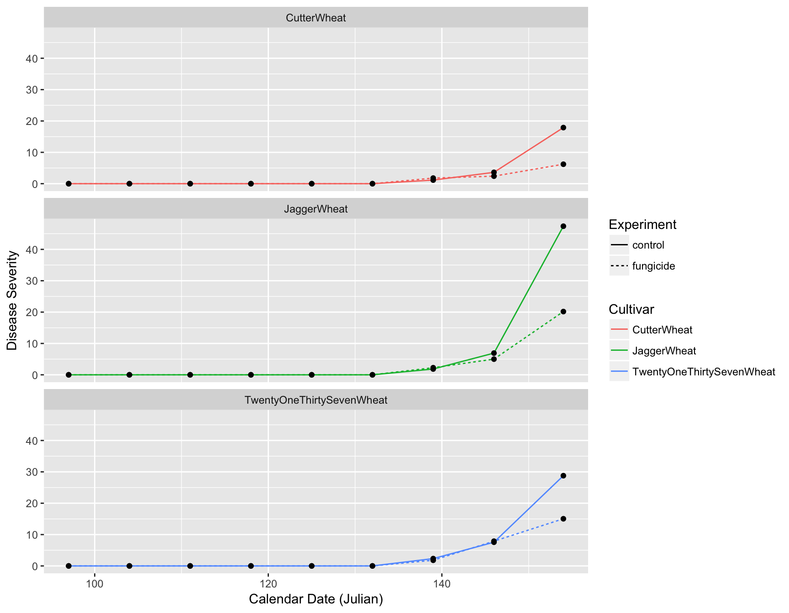
The labels are now okay, but it’s still not publication-ready. The font is too small, the background should have no gridlines and the axis text needs to be darker.
Adjusting Look and Feel (theme)
The first thing we can do is change the default theme from theme_grey() to theme_bw(). We will simultaneously set the base size of the font to be 16pt.
> (fungicide.plot <- fungicide.plot + theme_bw(base_size = 16))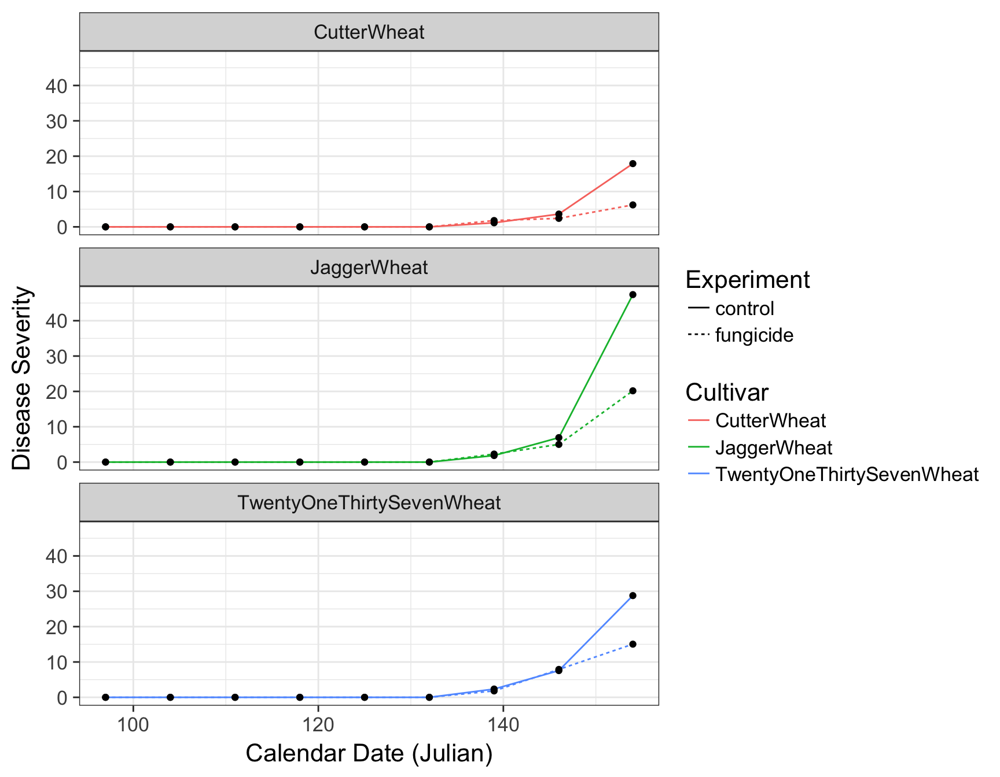
There are many different default themes available for ggplot2 objects that change many aspects of the look and feel. The ggthemes contains many popular themes such as fivethirtyeight and economist. Of course, as it is, the plot is still not ready for publication. For one, the legend is taking up to much horizontal realestate and the size of the plot is cutting off TwentyOneThirtySevenWheat.
To adjust granular aspects of the theme, we can use the theme() function, which contains a whopping 71 different options all related to the layout of the non-data aspects of the plot.
> stop("
+ Look at ?theme and figure out one of the following:
+ 1. change the aspect ratio of the panels
+ 2. remove the background grid in the panels
+ 3. change the placement of the legend
+ 4. change the orientation of the legend
+ ")Error in eval(expr, envir, enclos):
Look at ?theme and figure out one of the following:
1. change the aspect ratio of the panels
2. remove the background grid in the panels
3. change the placement of the legend
4. change the orientation of the legend
When we inspect the help page of the theme() function, we can find out how to adjust several parameters to make out plot look acceptable:
> (fungicide.plot <- fungicide.plot + theme(aspect.ratio = 1/3))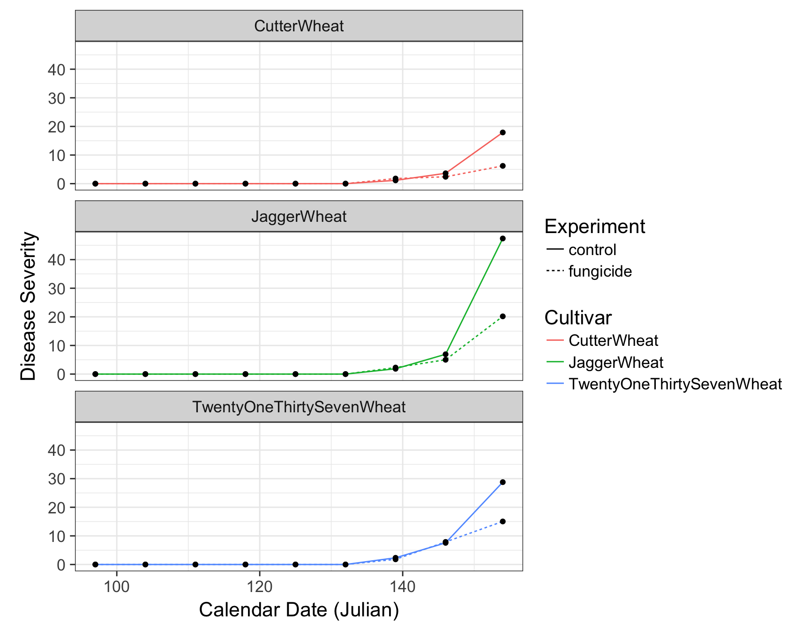
> (fungicide.plot <- fungicide.plot + theme(legend.position = "bottom"))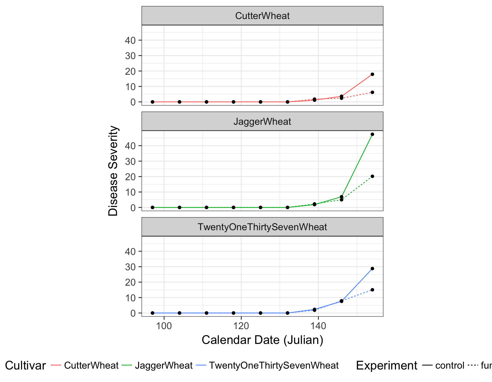
> (fungicide.plot <- fungicide.plot + theme(legend.direction = "vertical"))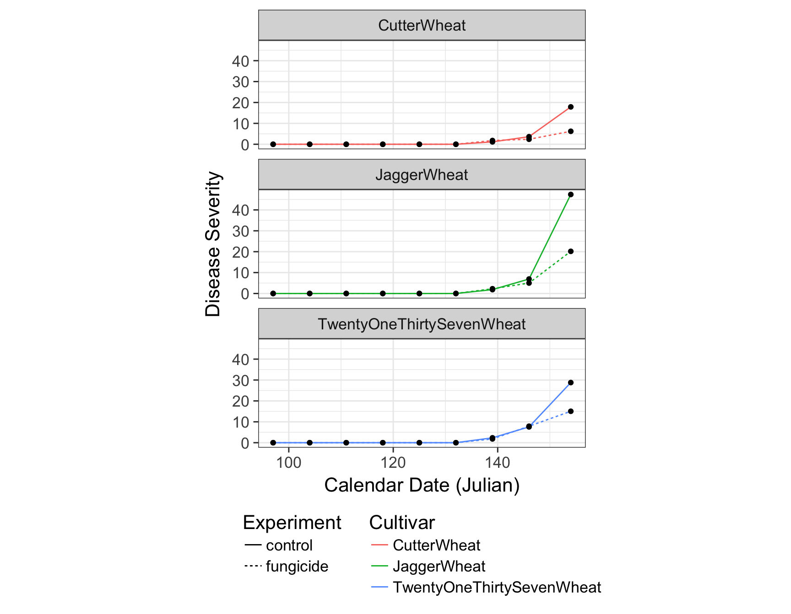
> (fungicide.plot <- fungicide.plot + theme(panel.grid = element_blank()))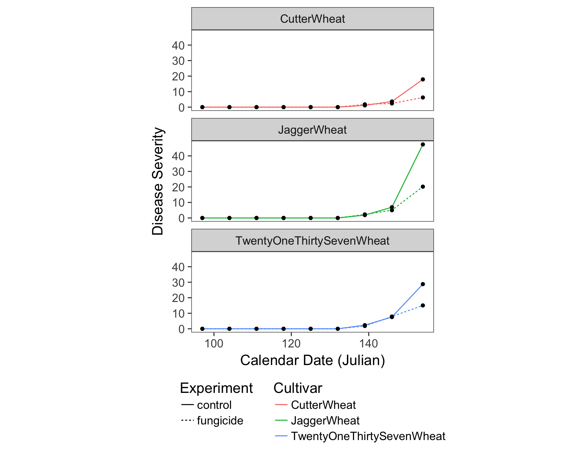
Putting it all together
Because we can add information to a plot with the + symbol, we can add all of the elements in one go. Let’s combine what we have above, but removing the points and the color of the lines since these are redundant.
> fungicide.plot <- ggplot(fungicide.tidy, aes(x = Julian.Date, y = Severity)) +
+ geom_line(aes(lty = Experiment), size = 1) +
+ facet_wrap(~Cultivar, ncol = 1) +
+ theme_bw(base_size = 16) +
+ theme(aspect.ratio = 1/3) +
+ theme(legend.position = "bottom") +
+ theme(legend.direction = "vertical") +
+ theme(panel.grid = element_blank()) +
+ xlab("Calendar Date (Julian)") +
+ ylab("Disease Severity")
> fungicide.plot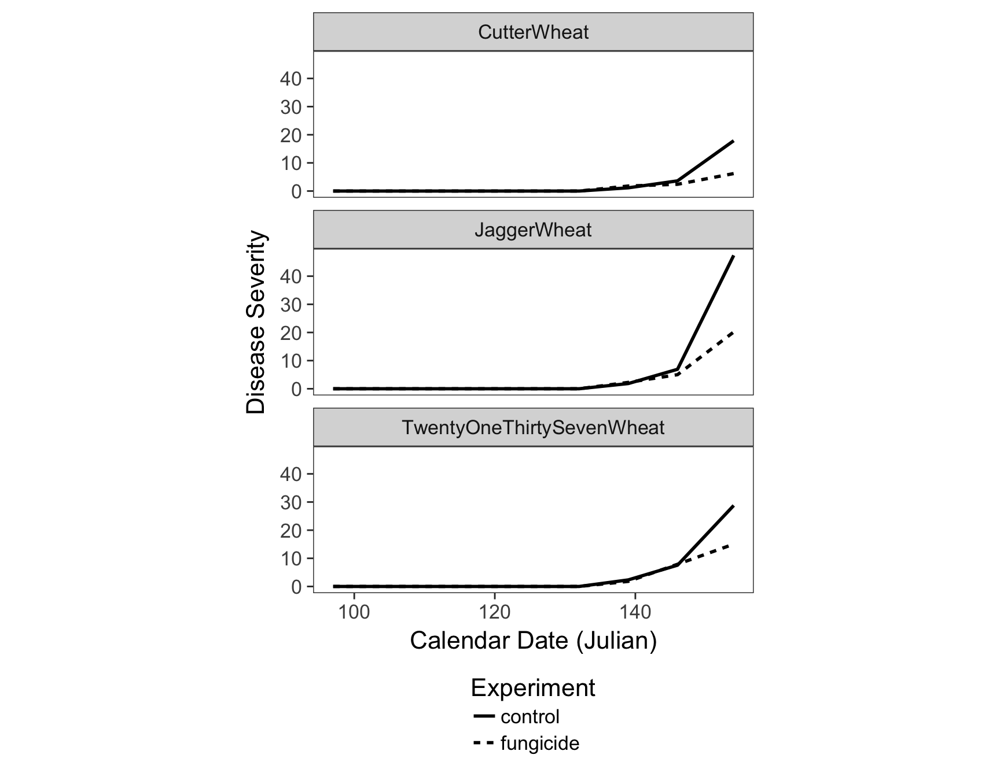
Saving your plot
Now that we have our plot finished, we can save it with the ggsave() function, which allows us to save it as a pdf, png, svg, eps, etc. file.
> ggsave(filename = "results/figure1.pdf", width = 88, units = "mm")Saving 88 x 178 mm image
This work is licensed under a Creative Commons Attribution-ShareAlike 4.0 International License.